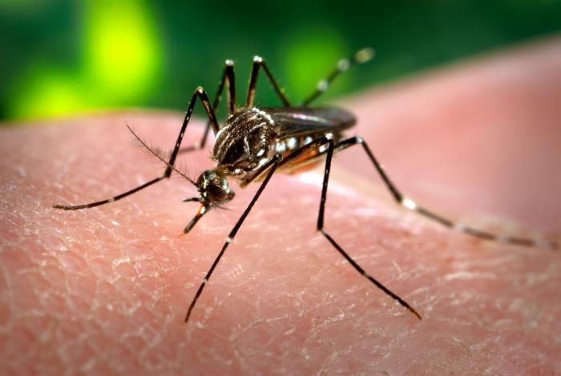

डेंगू का मच्छरYellow Fever Mosquito
Aedes aegypti · Culicidae · INS-0051

- Scientific name
- Aedes aegypti (Linnaeus, 1762)
- Family
- Culicidae
- Hindi
- डेंगू का मच्छर
- Local names
- dengue machhar, tiger machhar
- Status here
- naturalized
- Movement
- Resident, here all year
- IUCN
- not evaluated
- Review
- audited and independently read
When to look कब देखें
Expected mainly in March, April, May, June, July, August, September, October, November.
Uses and possibilities उपयोग और संभावनाएँ
Drawn from the documented uses in the profile below, where each is labelled traditional, current or a research lead. All uses →
Tell it apart from इनसे अलग पहचानें
डेंगू का मच्छर / Dengue Mosquito
Aedes aegypti (Linnaeus, 1762) — Culicidae
डेंगू का मच्छर — काला मच्छर जिसकी पीठ पर सफ़ेद वीणा जैसी धारियाँ और टाँगों पर सफ़ेद छल्ले होते हैं, और जो रात में नहीं, दिन में काटता है। यह जंगल या तालाब का नहीं, घर का मच्छर है: ड्रम, टंकी, कूलर, गमले की तश्तरी और फेंके हुए टायर के साफ़ पानी में पनपता है। डेंगू, चिकनगुनिया और ज़ीका — तीनों यही फैलाता है। इसे रोकना मच्छर मारने से नहीं, पानी के बर्तन खाली करने से होता है।
Quick Identification त्वरित पहचान
| Feature | Description |
|---|---|
| Size | Small, 4–7 mm |
| Colour | Black with bright white markings |
| Thorax | A white "lyre" or violin shape: two curved outer lines and two straight inner lines |
| Legs | Black with clean white bands at the joints |
| Abdomen | Black with white bands and side patches |
| Behaviour | Bites by day, especially early morning and late afternoon; approaches low, bites ankles; rests indoors in dark corners and under furniture |
| Larvae | "Wrigglers" hanging at an angle from the surface of clean stored water, diving when disturbed |
Field tip: A black-and-white mosquito that bites you around the ankles at breakfast or teatime, indoors or in the yard, is almost certainly Aedes. The lyre on the back names the species; its close relative the Asian tiger mosquito has a single white stripe instead. Check the cooler and the drum: the wrigglers are the proof.
हिंदी — कैसे पहचानें: काला-सफ़ेद मच्छर जो दिन में, सुबह और शाम, टखनों पर काटता है; पीठ पर सफ़ेद वीणा की आकृति, टाँगों पर सफ़ेद छल्ले। कूलर और ड्रम का पानी देखिए — लार्वा मिले तो यही है।
Morphology आकारिकी
Biometrics:
| Measurement | Range |
|---|---|
| Body length | 4–7 mm |
| Wing length | 2.5–3.5 mm |
| Egg | 0.6 mm, black |
| Larva, 4th stage | 7–8 mm |
| Lifespan, adult female | 2–4 weeks |
Adult: Scales black with silvery-white; the thoracic lyre is diagnostic; palps of the female short and white-tipped; wings unspotted. The male has feathery antennae and does not bite.
Eggs: Laid singly on the damp wall of a container just above the water, not on the water; they dry and survive for months, hatching when the container next fills. This is the trait that makes the species so hard to remove: an empty, dry drum is still infested.
Larva and pupa: The larva hangs from the surface by a short breathing siphon at a steep angle and feeds on particles; the pupa is a comma-shaped "tumbler". Egg to adult takes seven to ten days in summer.
हिंदी: मादा की पीठ पर सफ़ेद वीणा, नर नहीं काटता। अंडे पानी पर नहीं, बर्तन की नम दीवार पर पानी की सतह से ऊपर देती है; ये सूखकर महीनों ज़िंदा रहते हैं और अगली बार पानी भरते ही निकलते हैं — इसीलिए खाली सूखा ड्रम भी संक्रमित रहता है। गरमी में अंडे से मच्छर सात से दस दिन में।
Behaviour & Ecology व्यवहार और पारिस्थितिकी
A mosquito that has made itself a part of the human household. It came out of African forests, where it bred in tree holes, and spread across the tropics with people and their water containers; the form that lives with us prefers human blood, rests indoors, lays its eggs in artificial containers and rarely flies more than a few hundred metres in its life. In a village it breeds in exactly the water that is cleanest and most carefully kept: the drinking-water drum, the cooler, the overhead tank with a loose lid, the pot under the tulsi.
Females take several small blood meals per egg batch, which is why one infected mosquito can infect several people. It is eaten by jumping spiders, Asian House Gecko and the swallows hawking over the yard, and its larvae by dragonfly nymphs and larvivorous fish such as guppies.
हिंदी: यह मच्छर इंसान के घर का हिस्सा बन गया है। अफ़्रीका के जंगलों से लोगों और उनके पानी के बर्तनों के साथ दुनिया भर में फैला; इंसान का खून पसंद करता है, घर के अंदर आराम करता है, और ज़िंदगी भर कुछ सौ मीटर ही उड़ता है। गाँव में यह सबसे साफ़ रखे पानी में पनपता है — पीने का ड्रम, कूलर, टंकी, तुलसी के नीचे का गमला। मादा एक बार में कई लोगों को काटती है, इसीलिए एक मच्छर कई को बीमार कर सकता है।
Life Cycle / Phenology जीवन चक्र
| Stage / season | Event |
|---|---|
| Egg | On the damp container wall; survives dry for months |
| Larva, 4–7 days | Four stages in the water |
| Pupa, 1–3 days | Does not feed; floats at the surface |
| Adult | Emerges; mates within days; female seeks blood |
| July–November | Peak numbers with rain-filled containers and stored water |
| December–February | Adults scarce; eggs wait |
हिंदी: अंडा बर्तन की दीवार पर, लार्वा चार से सात दिन, प्यूपा एक से तीन दिन, फिर मच्छर। बरसात और पानी जमा करने के मौसम में सबसे ज़्यादा, सर्दी में अंडे इंतज़ार करते हैं।
Host Plants or Prey आहार
- Female: blood, chiefly human; also dogs and cattle.
- Male and female: plant sugars and nectar.
- Larvae: bacteria, algae and organic particles in the container water.
Predators / Natural Enemies शत्रु
- In the house: Asian House Gecko, jumping spiders such as Pantropical Jumping Spider, Long-bodied Cellar Spider.
- In the air: Barn Swallow, wire-tailed swallow, House Swift, dragonflies such as Wandering Glider.
- In the water: dragonfly nymphs, larvivorous fish (guppy, Gambusia), Indian Water Strider at the surface.
- Microbes: Bacillus thuringiensis israelensis, used as a larvicide; the Wolbachia bacterium, used in releases to block dengue transmission.
Agricultural / Human Relevance कृषि प्रासंगिकता
Disease. Aedes aegypti transmits dengue, chikungunya, Zika and yellow fever (the last not present in India). Dengue has become a yearly post-monsoon epidemic in Uttar Pradesh, with eastern districts regularly affected; most cases are mild fever, some become severe, and there is no specific drug, only supportive care. A person with dengue should sleep under a net by day so that mosquitoes do not carry the virus to others.
What controls it. Not spraying, which reaches few resting adults, but removing breeding water once a week: empty and scrub (eggs cling to walls) drums, coolers, pot saucers and tanks; cover stored water; discard or turn over tyres, cans and plastic; put a few larvivorous fish in tanks that cannot be emptied. This "source reduction" is the whole of effective dengue prevention and is in the hands of households, not the health department.
Protection. Day-biting means day protection: long sleeves and repellent at dawn and dusk, screens on windows, nets for daytime sleepers, especially the sick, children and the elderly.
Traditional and Ethnobotanical Use: none, beyond the long-standing use of neem smoke and neem oil as repellents, which have some supporting evidence.
Today. A public-health priority in every town and increasingly every village of the state.
Research direction (a lead, not a result). Wolbachia-infected mosquito releases (the World Mosquito Program) have cut dengue sharply in trials in Indonesia and are being tried in India; genetic and sterile-male approaches are under study. For a village, the proven technology remains the weekly emptying of containers.
हिंदी: बीमारी: डेंगू, चिकनगुनिया, ज़ीका। उत्तर प्रदेश में डेंगू हर बरसात के बाद की महामारी है; ज़्यादातर मामले हल्के बुख़ार के, कुछ गंभीर, कोई खास दवा नहीं। रोकथाम: छिड़काव नहीं, हफ़्ते में एक बार हर बर्तन का पानी खाली करके रगड़कर धोना (अंडे दीवार से चिपके रहते हैं), पानी ढकना, टायर-डिब्बे-प्लास्टिक हटाना, टंकी में गप्पी मछली। दिन में काटता है, इसलिए दिन का बचाव — पूरी बाँह, मच्छरदानी, खासकर बीमार और बच्चों के लिए।
Expected Locally स्थानीय रूप से अपेक्षित
Not a field record. Written from published accounts for eastern Uttar Pradesh. No confirmed local sighting yet — if you have seen it, that is what the atlas needs.
अभी तक स्थानीय पुष्टि नहीं। यह विवरण प्रकाशित स्रोतों से है, किसी अवलोकन से नहीं।
To be expected in and around every house in the district that stores water, which is every house, with numbers peaking in September and October. A photograph of the lyre-backed adult, or of larvae in a cooler, is a confirmed record and a public-health observation at the same time.
Distribution वितरण
Global range: Throughout the tropics and subtropics, following people.
In India: Every state; most abundant in towns and in villages with water storage.
In Uttar Pradesh: Statewide, with dengue reported from nearly every district.
In Basti district / eastern UP: Expected everywhere people live.
Research Questions शोध प्रश्न
Anyone can investigate these | कोई भी इन प्रश्नों की जाँच कर सकता है
- Which container in your house has larvae this week? / इस हफ़्ते आपके घर के किस बर्तन में लार्वा हैं? — Check every one with a torch; keep a weekly list.
- At what hours are you bitten? — Note each bite for a week by time and place.
- Do the larvae survive if the drum is emptied but not scrubbed? — Refill an unscrubbed drum with clean water and look after five days.
- Does the neighbourhood's dengue season match the container count? / क्या मोहल्ले में डेंगू का मौसम लार्वा वाले बर्तनों की गिनती से मेल खाता है? — Ask the ASHA worker for the months of cases.
- Which predators take mosquitoes in the yard? — Watch geckos and swallows at dusk.
Similar Species मिलती-जुलती प्रजातियाँ
| Species | How to tell apart | हिंदी |
|---|---|---|
| Asian tiger mosquito (Aedes albopictus) | One straight white stripe down the thorax instead of a lyre; more outdoors, in gardens and tree holes; also a dengue vector | पीठ पर एक सीधी सफ़ेद धारी |
| Southern House Mosquito (Culex quinquefasciatus) | Brown, unmarked, bites at night, breeds in dirty drain water; a filariasis vector | भूरा, रात में, नाली का पानी |
| Malaria mosquito (Anopheles, see Malaria Mosquito) | Spotted wings, rests with body tilted up at an angle, bites at night, breeds in clean pools and fields | तिरछा बैठता है, रात में |
Field rule: Black and white, a white lyre on the back, white-ringed legs, biting by day near the house: the dengue mosquito.
Taxonomy & Classification वर्गीकरण
Original description. Linnaeus, in Hasselquist's Reise nach Palästina (1762), p. 470, as Culex aegypti, from specimens collected in Egypt. Placed in Aedes in the twentieth century; the subgenus Stegomyia is sometimes raised to a genus, giving Stegomyia aegypti.
Subspecies. Two forms: Aedes aegypti aegypti, the pale, domestic, human-biting form found in India, and A. a. formosus, the dark forest form of sub-Saharan Africa.
Family and order placement. Culicidae, subfamily Culicinae, tribe Aedini; order Diptera, the true flies.
Phylogenetic notes. The domestic form arose from African forest populations some thousands of years ago and spread with the slave trade and shipping; genomic studies trace the Asian populations to that dispersal.
IUCN status rationale. Not evaluated; a disease vector whose reduction is the goal.
Photo Gallery फोटो गैलरी
Photos needed आवश्यक फोटो
- [ ] Adult on skin or a wall showing the lyre (पीठ की वीणा)
- [ ] Larvae in a cooler or drum (लार्वा)
- [ ] The breeding container itself (बर्तन)
Atlas Connections संबंधित प्रजातियाँ
- Southern House Mosquito — the night-biting mosquito of the drains
- Malaria Mosquito — the other disease mosquito, of pools and fields
- Asian House Gecko and Barn Swallow — eat it
- Neem — the traditional repellent
References संदर्भ
- Linnaeus, C. (1762). In Hasselquist, F., Reise nach Palästina in den Jahren von 1749 bis 1752, p. 470. Rostock. [original description, as Culex aegypti]
- Barraud, P.J. (1934). The Fauna of British India, including Ceylon and Burma. Diptera, vol. 5: Family Culicidae, tribes Megarhinini and Culicini. Taylor and Francis, London.
- Christophers, S.R. (1960). Aëdes aegypti (L.), the Yellow Fever Mosquito: Its Life History, Bionomics and Structure. Cambridge University Press.
- World Health Organization (2009). Dengue: Guidelines for Diagnosis, Treatment, Prevention and Control. WHO, Geneva.
- National Center for Vector Borne Diseases Control (2023). Guidelines for Prevention and Control of Dengue and Chikungunya. Ministry of Health and Family Welfare, New Delhi.
- Powell, J.R. & Tabachnick, W.J. (2013). History of domestication and spread of Aedes aegypti: a review. Memórias do Instituto Oswaldo Cruz 108 (Suppl. 1): 11–17.
- Utarini, A. et al. (2021). Efficacy of Wolbachia-infected mosquito deployments for the control of dengue. New England Journal of Medicine 384: 2177–2186.
- GBIF Occurrence Data — Aedes aegypti, India (2026).
Source file: species/fauna/insects/dengue_mosquito.md